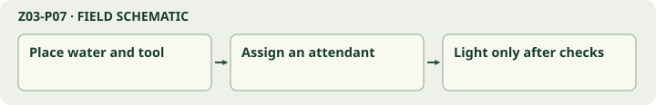

Z03-P07 · Fire and ignition
Prepare water before starting
Prevent an ignition attempt from starting before extinguishing resources are in place.
When it applies · A lawful outdoor fire where weather, site and attendance have already been checked.
Equipment · Ready water, stirring tool, ring and accessible non-fire alternative.

Actions
- Put extinguishing water and tool within reach outside the hot area. Assign an attendant who will stay until the site is cold.[C02, C04, ED]
- Keep combustible supplies away from the ring and establish where the group will stand or walk.[C02, ED]
- Stop before ignition if the water is lost, frozen or insufficient. Choose the no-fire plan rather than relying on a distant source.[C02, C04, C08, ED]
Verify · The attendant can locate water and tool without crossing the fire area.[ED]
Stop or change course · Changing conditions or a loss of equipment triggers a fresh authorization and site check.[C01, C02, ED]
Evidence and editorial notes
- C01 · Minnesota DNR · Fire Danger and Burning Restrictions
- Fire danger and burning restrictions map and links · Current Minnesota location, date and jurisdiction
Check current restrictions and local authority requirements before lighting.
Primary source · checked 2026-11-24 - C02 · USDA Forest Service / Smokey Bear · Smokey Bear’s Campfire Safety Guide
- Build your campfire; choose a location · Where campfires are currently permitted
Use an established fire ring where required or available. Protect the area from nearby combustible materials, avoid windy conditions and keep water ready.
Primary source · checked 2026-11-24 - C04 · USDA Forest Service / Smokey Bear · Smokey Bear’s Campfire Safety Guide
- Maintain and extinguish a campfire · Occupied campfire, water and tools available
Stay with the fire. Drown, stir and add water again until cool. Leaving visible embers or merely covering them is unsafe.
Primary source · checked 2026-11-24 - C08 · NWS · What To Do If You're Caught in a Winter Storm
- Outside > If there is no shelter nearby · Stranded outdoors during a winter storm
Seek shelter and block wind and wet exposure. Reduce heat loss from contact with snow or ground.
Primary source · checked 2026-11-24
Source lineage · B008 and Smokey Bear campfire guide.